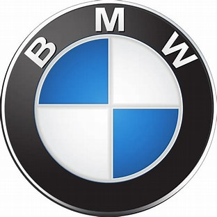
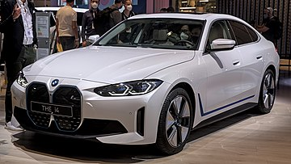
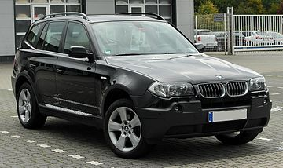

BMW (Bayerische Motoren Werke) – niemiecki koncern motoryzacyjny produkujący od 1916 roku samochody osobowe, motocykle, skutery oraz silniki.

Obrazek 1. Logo BMW
Kotwica auto1

Obrazek 2. BMW i4
BMW i4 – elektryczny samochód osobowy klasy średniej produkowany pod niemiecką marką BMW od 2021 roku.
Kotwica auto2

Obrazek 3. BMW X3
BMW X3 – samochód osobowy typu SUV klasy średniej produkowany pod niemiecką marką BMW od 2003 roku. Od 2017 roku produkowana jest trzecia generacja pojazdu.
BMW (Bayerische Motoren Werke) – niemiecki koncern motoryzacyjny produkujący od 1916 roku samochody osobowe, motocykle, skutery oraz silniki.
Obrazek 1. Logo BMW